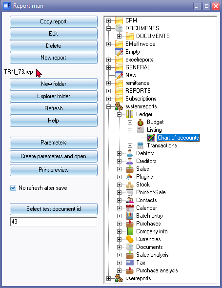

Reports - File structure
The Report designer folder / file structure
All document layout files and reports are installed and stored in the ...\plug_ins\reports folder of your installation directory.
Access select Report designer:
On the Setup ribbon, select Report designer. The Report designer will list all layout files and report folders as follows:

- Document printing - All the layout files for printing documents are stored in the ...\plug_ins\reports\DOCUMENTS\DOCUMENTS folder.
- Reports menu (Reports ribbon) - These reports are stored in the ...\plug_ins\reports\systemreports folder.
- User reports menu (Reports ribbon) - These reports are stored in the "userreports" folder. Users are encouraged to create and/or edit existing reports, but it is recommended that these be copied and stored in the ...\plug_ins\reports\userreports\ folder.
- Spreadsheet reports menu (Reports ribbon) - These reports are stored in the ...\plug_ins\reports\excelreports\ folder.
- Ledger analyser and Reports - T-Account viewer (Reports ribbon) - Seven (7) reports are stored in the ...\plug_ins\reports\GENERAL\ledgerview folder. These are:
- budgetvsactsimple - Budget vs actual and This year vs last year report types.
- colbal - Not used.
- colbalopen - Not used.
- colbalopenonly - Not used.
- colbalsimple - Standard column balances report type.
- detail - Trial balance, Income statement and the Balance sheet report types.
- ledgerdetail - Print button on the T-Account viewer.
- openitemdays - Print Age analysis reports for current date or a selected date of ageing from Open item link - Due tab or Age analysis icon on the Reports ribbon.
- Reports generated from inside the osFinancials5 on various screens are stored in the ...\plug_ins\reports\GENERAL\documents folder. These are:
- Batch Processing - Batch entry (F2) on the Default ribbon):
- abbreviations - Abbreviation Definitions as set in the Batch entry – F9:Process option. If you click on the Print button of the Abbreviation screen, a list of Abbreviation definitions will be printed. The abbreviations listed on this report, may be used to automatically fill the description column in the document lines when processing documents (invoices, credit notes, quotes, purchases, supplier returns and orders).
- batch - Batch Listing on the Batch entry - F8:List - This will print a list of all transactions in an unposted batch.
- postedbatch - Batch Listing on the Batch entry - Posted batches - Details tab - Print button - This will print a list of all transactions in a posted batch.
- paycreditor - Prints the “Automatic payments” report when clicking on the Print button in the Payments Debtors / Creditors option (Batch entry - F9:Process).
- paydebtor - Prints the “Automatic receipts” report Debtor payments report when clicking on the Print button in the Receive Payments / Creditors option (Batch entry – F9:Process).
- receipt - Prints a receipt if the “Create receipts” option is selected for Receipt batches in the Batch entry - F9:Process (and if the Print option is ticked).
- recon - Prints the Bank reconciliation report when clicking on the Report icon of the "Reconcile Bank account" screen (Cash / Bank on the Default ribbon).
- Documents - Documents (F6)) menu (Default ribbon):
- barcodes - context menu - Quick link to print the barcodes of the stock items selected on documents.
- labels - context menu - Quick link to print the postal address labels (and Contact name) of the debtors (customers / clients) selected on sales documents or creditors (suppliers) selected on purchase documents.
- labelsdelivery - Not implemented yet. This is similar than the labels report, but should print delivery addresses in stead of postal addresses.
- Point-of-Sales (Standard) - Input - POS Invoice (Ctrl + F6) menu (Default tab):
- oldpossales - This report prints from the Process - Reports or Cashup option on the POS Invoicing screen.
- oldposcashup - This report prints from the Process - Reports or Cashup option on the Input → POS Invoicing screen (Default ribbon).
- Others:
- datacheck - Prints the Data integrity check report from Tools - Data integrity check (Setup ribbon).
- groups - Prints the list of the Account group 1 / 2, Debtor group 1 / 2, Creditor group 1 / 2, Stock group 1 / 2, Document group 1 / 2, etc. when clicking on the Print button of a selected group on Setup → Groups (Setup ribbon).
- payments - Prints a Receipts / Payments advise when the “Receive payment” context menu option is selected (and the Print option is ticked) on the Open item link menu Transactions tab or on the Open item link screen (Default ribbon) for a debtor (customer / client) or creditor (supplier / vendor) account.
- Userlog - Prints the "Userlog report" when clicking on the Log report button on Setup → Access control (Setup ribbon).
- REPORTS:
- CREDITOR - (Creditors (F5) on the Default ribbon) – Selected Creditor Label (Postal address) and Selected Creditor Delivery Label (Delivery address). Print when you right-click on a selected creditor (supplier / vendor) account from the list.
- DEBTOR - (Debtors (F4) on the Default ribbon) – Selected Debtor Label (Postal address) and Selected Debtor Delivery Label (Delivery address). Print when you right-click on a selected debtor (customer / client) account from the list.
- STOCK - (Stock items (F12) on the Default ribbon) – Barcode and Yagoda barcode. Print when you right-click on a selected stock item or stock items from the list.
- PROJECTS - If projects have been activated, and transactions have been entered in batches and documents, you may print five (5) reports (i.e. Transactions, Hours, Stock items, Statements and the Total report). Budgets can also be entered for Projects, but it needs to be added to these reports.
- HORECAPOS - This folder contains the reports for the HORECAPOS and RETAILPOS Plugins.
- SUBSCRIPT - This folder contains the Subscriptions report. (See the Subscriptions folder – This folder contains the report, emailtemplates, layouts and Sql for the Subscriptions Plugin).
- REPORTS FOLDER (Discontinued Reports) - The BATCHREPORT, CONTACTS, COSTCENTER, GL and TAX folders contains old reports not used in odFinancials5.
- Folders and reports for Plugins:
- EmailInvoice and debcred folders are used for the E-MailPro plugin.
- parcel - This is not used at this stage – It is reserved for a Send Parcel plugin.
- remittance - This contains the list report, emailtemplates and layouts for the Reminders plugin.
- Subscriptions - This folder contains the report, emailtemplates, layouts and Sql for the Subscriptions Plugin.